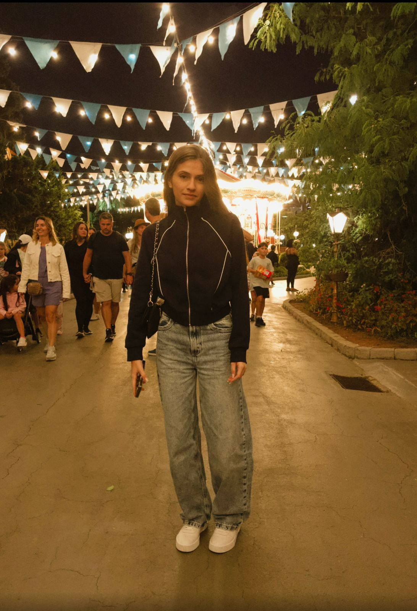

Quem sou eu
Meu nome é Júlia Cabral, tenho 17 anos e estou no último ano do ensino médio. Adoro sair com meus amigos e ouvir música. Este blog vai contar um pouco sobre minha vida adolescente - as alegrias, desafios e aprendizados dessa fase tão intensa!